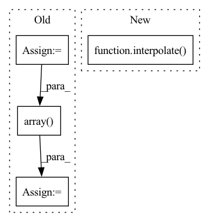

Pattern ID :39612

Before Change
def quadratic_interpolate(data, interval):
output = copy.deepcopy(data)
num_frames, num_markers, num_axis = data.shape
all_frames = list(range(num_frames))
exist_frames = list(range(0, num_frames, interval))
for marker in range(num_markers):
for axis in range(num_axis):
exist_x = exist_frames
exist_y = data[exist_frames, marker, axis]
interp_y = interpolate.interp1d(exist_x, exist_y, kind="quadratic")
output[:, marker, axis] = np.array(interp_y(all_frames))
return output
After Change
def quadratic_interpolate(data, interval):
return interpolate(data, interval, "quadratic")
In pattern: SUPERPATTERN
Frequency: 4
Non-data size: 4
Instances
Fragment ID: 112686768
Project Name: yknishidate/morecon
Commit Name: 5404bf51fefd2ca1a1d8c205e569a5769fdcebd9
Time: 2022-01-29
Author: yuki18425@gmail.com
File Name: interpolation.py
M Class Name: AnonimousClass
N Class Name: AnonimousClass
M Method Name: quadratic_interpolate(2)
N Method Name: quadratic_interpolate(2)
M Parent Class:
N Parent Class:
M File Name: interpolation.py
N File Name: interpolation.py
M Start Line: 21
M End Line: 31
N Start Line: 25
N End Line: 25
'>
Before Change
def linear_interpolate(data, interval):
output = copy.deepcopy(data)
num_frames, num_markers, num_axis = data.shape
all_frames = list(range(num_frames))
exist_frames = list(range(0, num_frames, interval))
for marker in range(num_markers):
for axis in range(num_axis):
exist_x = exist_frames
exist_y = data[exist_frames, marker, axis]
interp_y = interpolate.interp1d(exist_x, exist_y)
output[:, marker, axis] = np.array(interp_y(all_frames))
return output
def quadratic_interpolate(data, interval):
After Change
def linear_interpolate(data, interval):
return interpolate(data, interval, "linear")
def quadratic_interpolate(data, interval):
return interpolate(data, interval, "quadratic")
'>
Fragment ID: 112686767
Project Name: yknishidate/morecon
Commit Name: 5404bf51fefd2ca1a1d8c205e569a5769fdcebd9
Time: 2022-01-29
Author: yuki18425@gmail.com
File Name: interpolation.py
M Class Name: AnonimousClass
N Class Name: AnonimousClass
M Method Name: linear_interpolate(2)
N Method Name: linear_interpolate(2)
M Parent Class:
N Parent Class:
M File Name: interpolation.py
N File Name: interpolation.py
M Start Line: 7
M End Line: 17
N Start Line: 21
N End Line: 21
'>
Before Change
sf = self.max_dim / max(h, w)
nh = int(sf*h)
nw = int(sf*w)
nimg = np.array(Image.fromarray(img).resize((nw, nh)), dtype=img.dtype)
if "target_boxes" in targets:
targets["target_boxes"] *= sf
After Change
def __call__(self, img: np.ndarray, targets: Dict = {}) -> Tuple[np.ndarray, Dict]:
assert len(img.shape) == 3, "image shape expected 3 but found: {}".format(len(img.shape))
nimg, targets = interpolate(img, self.target_size, targets=targets)
return (nimg, targets)
class ConditionalInterpolate():
'>
Fragment ID: 112686766
Project Name: borhanmorphy/light-face-detection
Commit Name: c5da7ce5325ff194e2b96a81245e3834e7bd2c29
Time: 2021-05-09
Author: borhano.f.42@gmail.com
File Name: fastface/transforms/interpolate.py
M Class Name: Interpolate
N Class Name: Interpolate
M Method Name: __call__(3)
N Method Name: __call__(3)
M Parent Class:
N Parent Class:
M File Name: fastface/transforms/interpolate.py
N File Name: fastface/transforms/interpolate.py
M Start Line: 14
M End Line: 26
N Start Line: 30
N End Line: 30